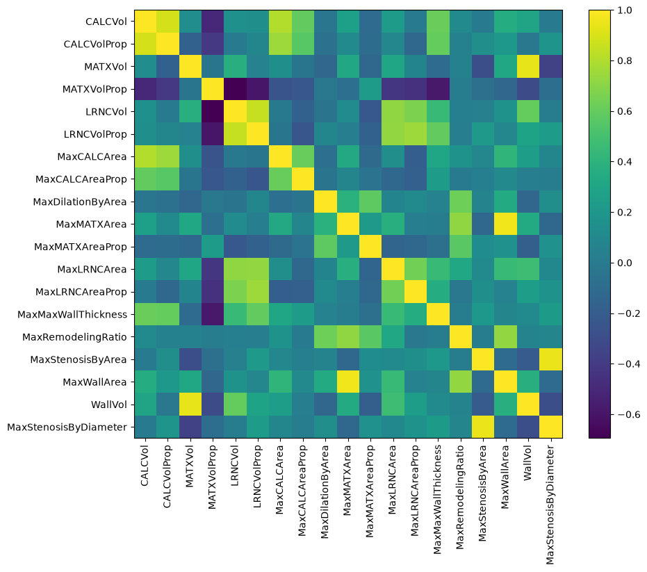
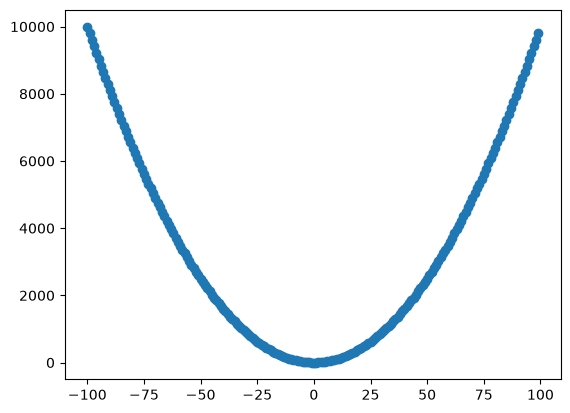
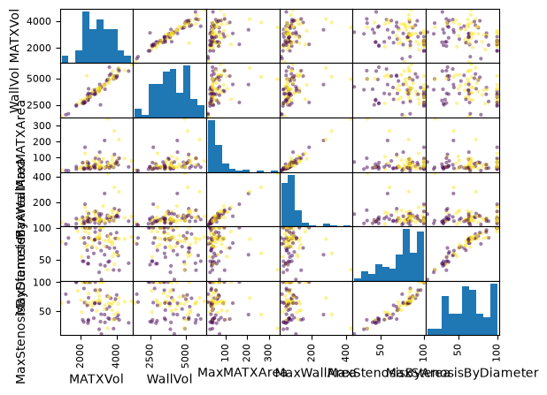
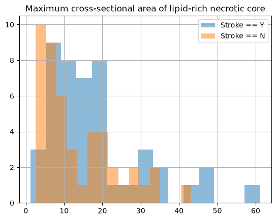
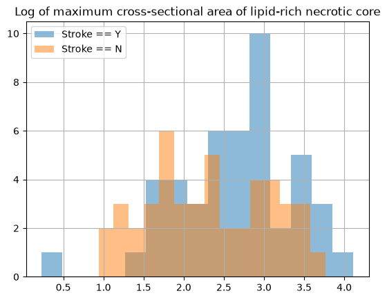
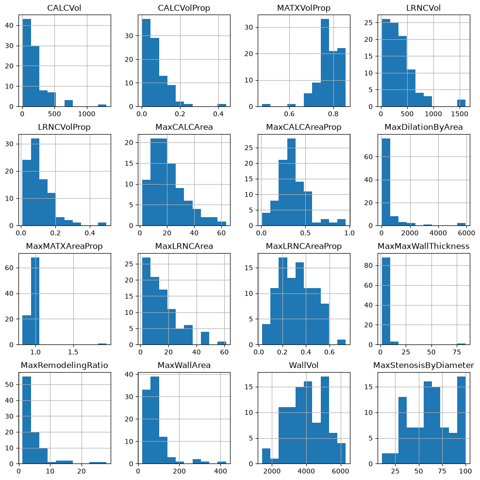
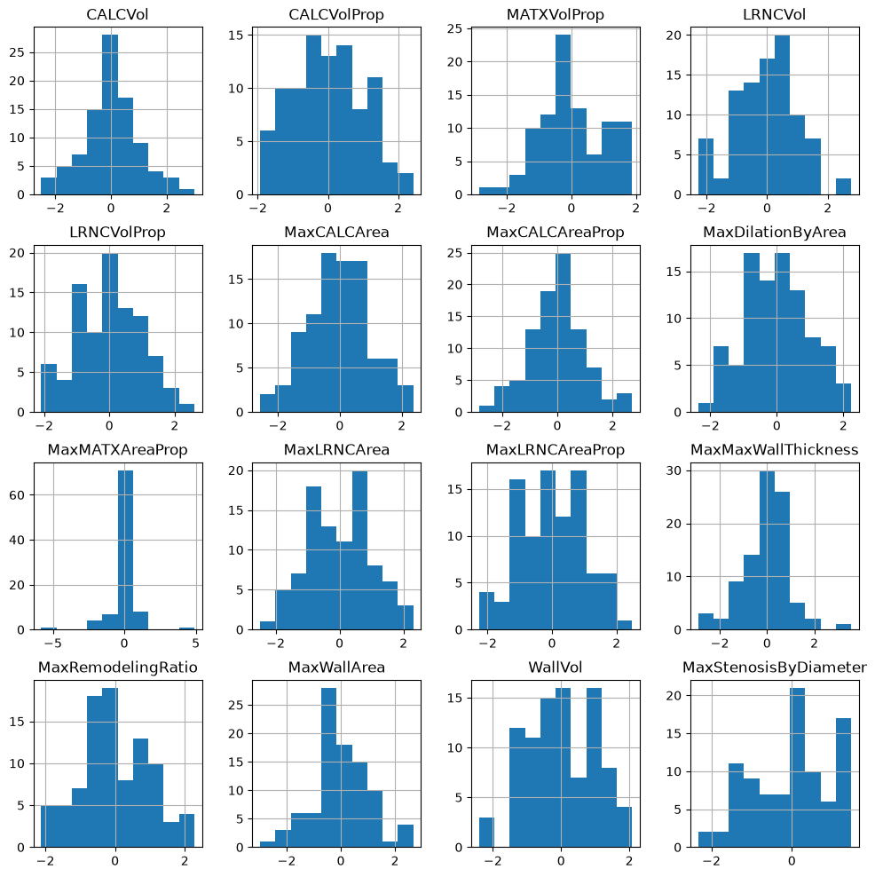
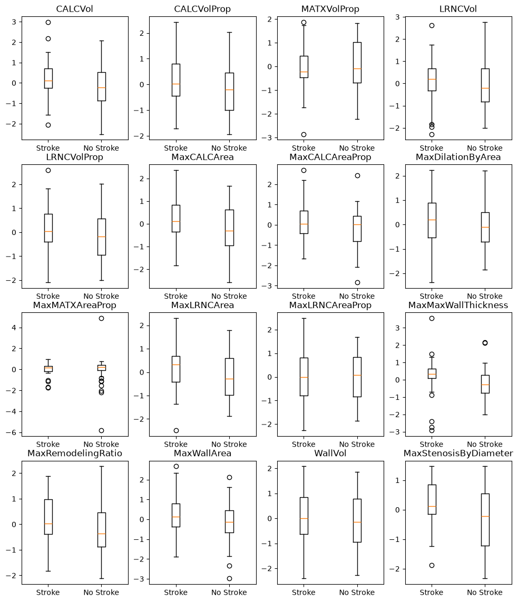
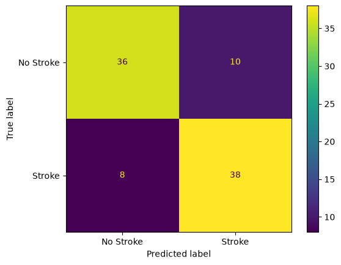
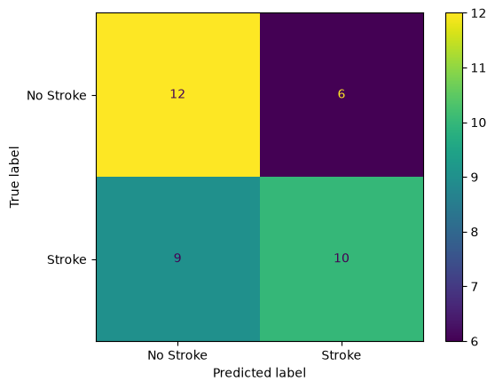

import pandas as pd
import matplotlib.pyplot as plt
import numpy as np
from pandas.plotting import scatter_matrix
from sklearn.preprocessing import PowerTransformer
from sklearn.svm import LinearSVC
from sklearn.metrics import ConfusionMatrixDisplay, confusion_matrix# load the data and take a peek
df = pd.read_csv("stroke_data.csv")
df.head(n=10)| Stroke | NASCET | CALCVol | CALCVolProp | MATXVol | MATXVolProp | LRNCVol | LRNCVolProp | MaxCALCArea | MaxCALCAreaProp | ... | WallVol | MaxStenosisByDiameter | age | sex | SmokingHistory | AtrialFibrillation | CoronaryArteryDisease | DiabetesHistory | HypercholesterolemiaHistory | HypertensionHistory | |
|---|---|---|---|---|---|---|---|---|---|---|---|---|---|---|---|---|---|---|---|---|---|
| 0 | N | 0 | 235.252599 | 0.070443 | 3156.834690 | 0.759958 | 224.871710 | 0.091085 | 12.350494 | 0.365768 | ... | 4192.170353 | 10.544113 | 72 | 1 | 1 | 0 | 0 | 0 | 0 | 1 |
| 1 | N | 0 | 31.433595 | 0.016165 | 3032.860796 | 0.813306 | 368.560663 | 0.133989 | 7.130660 | 0.211247 | ... | 3917.039836 | 18.646197 | 76 | 1 | 1 | 0 | 0 | 1 | 1 | 1 |
| 2 | N | 0 | 113.404823 | 0.038081 | 3835.220140 | 0.782526 | 321.158928 | 0.083037 | 16.286916 | 0.408811 | ... | 4935.327463 | 19.735114 | 72 | 0 | 0 | 0 | 0 | 0 | 0 | 0 |
| 3 | Y | 0 | 780.823789 | 0.213432 | 3518.876937 | 0.761089 | 140.517346 | 0.032065 | 63.350869 | 0.576206 | ... | 4909.503817 | 20.288317 | 61 | 1 | 1 | 0 | 0 | 1 | 1 | 1 |
| 4 | N | 0 | 84.055774 | 0.041384 | 2990.273268 | 0.749869 | 293.269922 | 0.075398 | 17.583561 | 0.321507 | ... | 4045.053268 | 49.297050 | 65 | 1 | 0 | 0 | 0 | 0 | 0 | 1 |
| 5 | N | 0 | 5.644322 | 0.002825 | 3359.322777 | 0.849280 | 55.768884 | 0.019836 | 2.841252 | 0.077346 | ... | 3960.832237 | 30.508565 | 64 | 1 | 1 | 0 | 1 | 0 | 1 | 1 |
| 6 | N | 0 | 360.737537 | 0.073351 | 4444.045173 | 0.783996 | 277.262746 | 0.060740 | 21.297476 | 0.386250 | ... | 5814.551863 | 36.526057 | 82 | 0 | 1 | 0 | 1 | 0 | 0 | 1 |
| 7 | N | 0 | 433.346380 | 0.151717 | 3106.593412 | 0.752070 | 36.507276 | 0.014665 | 27.488064 | 0.490122 | ... | 2489.344108 | 31.828904 | 83 | 0 | 0 | 1 | 1 | 0 | 0 | 1 |
| 8 | N | 0 | 133.497204 | 0.075189 | 2422.869764 | 0.847124 | 104.887066 | 0.042078 | 24.019141 | 0.422159 | ... | 2985.863642 | 33.333333 | 85 | 0 | 1 | 0 | 1 | 0 | 1 | 1 |
| 9 | N | 0 | 47.231303 | 0.024471 | 4674.982758 | 0.828424 | 290.074072 | 0.055439 | 13.199123 | 0.271152 | ... | 5676.155090 | 29.735504 | 56 | 0 | 1 | 0 | 0 | 0 | 0 | 0 |
10 rows × 29 columns
df.info()<class 'pandas.DataFrame'>
RangeIndex: 126 entries, 0 to 125
Data columns (total 29 columns):
# Column Non-Null Count Dtype
--- ------ -------------- -----
0 Stroke 126 non-null str
1 NASCET 126 non-null int64
2 CALCVol 126 non-null float64
3 CALCVolProp 126 non-null float64
4 MATXVol 126 non-null float64
5 MATXVolProp 126 non-null float64
6 LRNCVol 126 non-null float64
7 LRNCVolProp 126 non-null float64
8 MaxCALCArea 126 non-null float64
9 MaxCALCAreaProp 126 non-null float64
10 MaxDilationByArea 126 non-null float64
11 MaxMATXArea 126 non-null float64
12 MaxMATXAreaProp 126 non-null float64
13 MaxLRNCArea 126 non-null float64
14 MaxLRNCAreaProp 126 non-null float64
15 MaxMaxWallThickness 126 non-null float64
16 MaxRemodelingRatio 126 non-null float64
17 MaxStenosisByArea 126 non-null float64
18 MaxWallArea 126 non-null float64
19 WallVol 126 non-null float64
20 MaxStenosisByDiameter 126 non-null float64
21 age 126 non-null int64
22 sex 126 non-null int64
23 SmokingHistory 126 non-null int64
24 AtrialFibrillation 126 non-null int64
25 CoronaryArteryDisease 126 non-null int64
26 DiabetesHistory 126 non-null int64
27 HypercholesterolemiaHistory 126 non-null int64
28 HypertensionHistory 126 non-null int64
dtypes: float64(19), int64(9), str(1)
memory usage: 28.7 KBsum(df["Stroke"] == "N") / len(df)0.49206349206349204# select 30% to set aside, stratified by stroke
p = 0.3
# Super important to seed your random number generator for reproducibility
rng = np.random.default_rng(42) # yes, this is an over-used random number seed
n_test = int(p * len(df))
is_stroke = df["Stroke"] == "Y"
not_stroke = df["Stroke"] == "N"
n_stroke = int(p * is_stroke.sum())
test_ids = np.hstack([rng.choice(np.where(is_stroke)[0], n_stroke),
rng.choice(np.where(~is_stroke)[0], n_test - n_stroke)])
train_ids = np.delete(np.arange(len(df)), test_ids)
test = df.iloc[test_ids]
train = df.iloc[train_ids]
# re-define the is_stroke and not_stroke to relate to the training set
# Also cast to simple list to avoid pandas keyindex weirdness after pipeline
is_stroke = list(train["Stroke"] == "Y")
not_stroke = list(train["Stroke"] == "N")# A way simpler way
# from sklearn.model_selection import train_test_split
# train, test = train_test_split(df, 0.3, random_state=42)# Verify the splits
print(pd.DataFrame([train.value_counts("Stroke"), test.value_counts("Stroke")], ["Train", "Test"]))Stroke N Y
Train 46 46
Test 18 19# explore the training data
train.info()<class 'pandas.DataFrame'>
Index: 92 entries, 0 to 125
Data columns (total 29 columns):
# Column Non-Null Count Dtype
--- ------ -------------- -----
0 Stroke 92 non-null str
1 NASCET 92 non-null int64
2 CALCVol 92 non-null float64
3 CALCVolProp 92 non-null float64
4 MATXVol 92 non-null float64
5 MATXVolProp 92 non-null float64
6 LRNCVol 92 non-null float64
7 LRNCVolProp 92 non-null float64
8 MaxCALCArea 92 non-null float64
9 MaxCALCAreaProp 92 non-null float64
10 MaxDilationByArea 92 non-null float64
11 MaxMATXArea 92 non-null float64
12 MaxMATXAreaProp 92 non-null float64
13 MaxLRNCArea 92 non-null float64
14 MaxLRNCAreaProp 92 non-null float64
15 MaxMaxWallThickness 92 non-null float64
16 MaxRemodelingRatio 92 non-null float64
17 MaxStenosisByArea 92 non-null float64
18 MaxWallArea 92 non-null float64
19 WallVol 92 non-null float64
20 MaxStenosisByDiameter 92 non-null float64
21 age 92 non-null int64
22 sex 92 non-null int64
23 SmokingHistory 92 non-null int64
24 AtrialFibrillation 92 non-null int64
25 CoronaryArteryDisease 92 non-null int64
26 DiabetesHistory 92 non-null int64
27 HypercholesterolemiaHistory 92 non-null int64
28 HypertensionHistory 92 non-null int64
dtypes: float64(19), int64(9), str(1)
memory usage: 21.6 KB# Group the imaging predictors and risk factors
VC_preds = ["CALCVol", "CALCVolProp", "MATXVol", "MATXVolProp", "LRNCVol",
"LRNCVolProp", "MaxCALCArea", "MaxCALCAreaProp", "MaxDilationByArea",
"MaxMATXArea", "MaxMATXAreaProp", "MaxLRNCArea", "MaxLRNCAreaProp",
"MaxMaxWallThickness", "MaxRemodelingRatio", "MaxStenosisByArea",
"MaxWallArea", "WallVol", "MaxStenosisByDiameter"]
risk_preds = ["age", "sex", "SmokingHistory", "AtrialFibrillation", "CoronaryArteryDisease",
"DiabetesHistory", "HypercholesterolemiaHistory", "HypertensionHistory"]# Look at the correlation coefficients of the imaging predictors
im_corr = train[VC_preds].corr().values
plt.figure(figsize=(10,8))
plt.imshow(im_corr)
plt.colorbar()
plt.xticks(range(len(VC_preds)), VC_preds, rotation=90)
plt.yticks(range(len(VC_preds)), VC_preds)
plt.show()
# show that corrcoef only represents linear relationships
test_x = np.arange(-100,100)
test_y = test_x * test_x
plt.scatter(test_x, test_y)
np.corrcoef(test_x, test_y)array([[ 1. , -0.01936225],
[-0.01936225, 1. ]])
# print out features that are off-diagonal but have high correlation
corr_thresh = 0.9
exclude = []
scatter_check = []
for i in range(len(VC_preds)):
for j in range(len(VC_preds)):
if i < j and abs(im_corr[i, j]) > corr_thresh:
print(f"{VC_preds[i]} is correlated with {VC_preds[j]}")
exclude.append(VC_preds[i])
scatter_check += [VC_preds[i], VC_preds[j]]
# filter the VC_preds list
preds = [p for p in VC_preds if p not in exclude]MATXVol is correlated with WallVol
MaxMATXArea is correlated with MaxWallArea
MaxStenosisByArea is correlated with MaxStenosisByDiameter# look at a scatter matrix for the excluded features
scatter_matrix(train[scatter_check], c=is_stroke)#, diagonal='kde')
plt.show()
# look at the MaxLRNCArea
train[is_stroke]["MaxLRNCArea"].hist(bins=15, alpha=0.5)
train[not_stroke]["MaxLRNCArea"].hist(bins=15, alpha=0.5)
plt.legend(["Stroke == Y", "Stroke == N"])
plt.title("Maximum cross-sectional area of lipid-rich necrotic core")
# transfrom MaxLRNCArea and re-do the histogram
t = train["MaxLRNCArea"].apply(lambda x: np.log(x))
t[is_stroke].hist(bins=15, alpha=0.5)
t[not_stroke].hist(bins=15, alpha=0.5)
plt.legend(["Stroke == Y", "Stroke == N"])
plt.title("Log of maximum cross-sectional area of lipid-rich necrotic core")
# look at the histograms of all the predictors
train[preds].hist(figsize=(12,12))
plt.show()
# Normalize, then look at the histogram again
transformer = PowerTransformer().set_output(transform="pandas")
# always fit to the training data!
train_scaled = transformer.fit_transform(train[preds])train_scaled.hist(figsize=(12,12))array([[<Axes: title={'center': 'CALCVol'}>,
<Axes: title={'center': 'CALCVolProp'}>,
<Axes: title={'center': 'MATXVolProp'}>,
<Axes: title={'center': 'LRNCVol'}>],
[<Axes: title={'center': 'LRNCVolProp'}>,
<Axes: title={'center': 'MaxCALCArea'}>,
<Axes: title={'center': 'MaxCALCAreaProp'}>,
<Axes: title={'center': 'MaxDilationByArea'}>],
[<Axes: title={'center': 'MaxMATXAreaProp'}>,
<Axes: title={'center': 'MaxLRNCArea'}>,
<Axes: title={'center': 'MaxLRNCAreaProp'}>,
<Axes: title={'center': 'MaxMaxWallThickness'}>],
[<Axes: title={'center': 'MaxRemodelingRatio'}>,
<Axes: title={'center': 'MaxWallArea'}>,
<Axes: title={'center': 'WallVol'}>,
<Axes: title={'center': 'MaxStenosisByDiameter'}>]], dtype=object)
# Any obvious relationships to stroke status?
N = int(np.ceil(len(preds) ** 0.5))
fig,ax = plt.subplots(N,N,figsize=(12,14))
for p, pred in enumerate(preds):
# figure out the row/col
row = p // N
col = p % N
ax[row][col].boxplot([train_scaled[pred][is_stroke], train_scaled[pred][not_stroke]], tick_labels=["Stroke", "No Stroke"])
ax[row][col].set_title(pred)
# Let's try a support vector machine
classifier = LinearSVC()
classifier.fit(X=train_scaled, y=is_stroke)LinearSVC()In a Jupyter environment, please rerun this cell to show the HTML representation or trust the notebook.
On GitHub, the HTML representation is unable to render, please try loading this page with nbviewer.org.
Parameters
Fitted attributes
# See how well it worked on the training data
train_pred = classifier.predict(train_scaled)
cm = confusion_matrix(is_stroke, train_pred)
disp = ConfusionMatrixDisplay(cm, display_labels=["No Stroke", "Stroke"])
disp.plot()
from sklearn.model_selection import cross_val_score
# split the data into k=5 chunks, then train 5 models
# model 1 uses chunks 1-4 to train, tests on chunk 5
# model 2 uses chunks 1-3 + 5 to train, tests on chunk 4 etc
cross_val_score(classifier, train_scaled, is_stroke, scoring="accuracy")
# still data leakage because scaling done on all of training data
# (we'll talk about more in numeric transformations)array([0.57894737, 0.68421053, 0.66666667, 0.77777778, 0.72222222])# How does it do on our held-back test set?
# BAD BAD BAD
# Note: skipped a bunch of steps, we shouldn't be looking at test yet!
test_pred = classifier.predict(transformer.transform(test[preds]))
cm = confusion_matrix(test["Stroke"] == "Y", test_pred)
disp = ConfusionMatrixDisplay(cm, display_labels=["No Stroke", "Stroke"])
disp.plot()